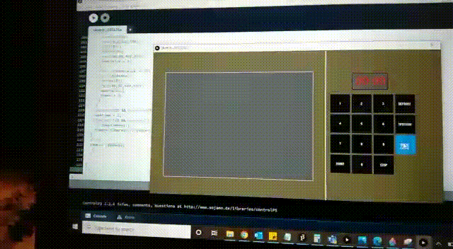

It is recommended to eliminate multiple defrost options because the user might get confused while selecting the option. Also all the buttons related to defrost more or less perform the similar operations
Power level button is rarely used. Because we set the required timer based on the type of food.It can be used only in situations where there are frequent fluctuations which is very rare/
Kitchen timer button is also similar to time cook button. So, this button is also not required in the interface
If the food is not heated properly in order to reheat we can use the start button or set the time cook and set the timer accordingly based on our requirement
The user can obtain the feedback from the interface once the operation selected is completed. In general, the feedback is obtained in the form of a sound confirming that the selected action is completed
In my oven the buttons like reheat,clock,kitchen timer,power level creates confusion because clock is similar to timecook and instead of reheat or kitchen timer we can use either start(+30 sec) or time cook
In my new interface i have removed all the unnecessary options and included only start,stop,defrost,timecook,open and close buttons.As there are less number of buttons this will help the user to understand and operate easily
